The List feature has been rebuilt from the ground up. This topic may contain inaccuracies with regards to the current implementation.
In Orchard, you can create custom content items and assign them as navigation menu entries. If you have more than a few custom content items, you'll probably want to organize them in lists. This topic walks you through this process. In the walkthrough, you'll create a custom content type and display its items in lists. (For information about how to create a custom content type, see Creating Custom Content Types.)
Creating a Custom Containable Content Type
To begin, you will create a custom content type that represents a book review.
On the dashboard, click Content, and then click the Content Types tab. Click Create New Type, and then in the Display Name field, enter the name "Book Review". (The Content Type ID field automatically generates an ID value that is based on what you entered for the display name, but without spaces.) Click Create to finish creating the new type.

A screen displays in which you can add content parts to the newly created content type. Select the check box for all of the following content parts to add them to your newly created content type.
- Body. Adds a body section with a rich-text editor that you can use to enter reviews.
- Comments. Enables users to comment on the reviews.
- Common. Gives each review a base set of properties, including an owner, a container, versions, a creation date, a publication date, and a modification date.
- Containable. This part tells Orchard that the items of this type can be attached to a list and enables dashboard options to manage the relationship between the items and lists. This is the most important part for the purpose of this walkthrough.
Important Always add the Common part when you add the Containable part. Otherwise you will not be able to add your items to a list.
- Route. Provides friendly URLs for book reviews.
- Tags. Lets you add tags to book reviews.
Note You can modify an existing content type to add the Containable part, which will allow the site administrator to attach items of that type to lists.
The following illustration shows the new Book Review content type with all the parts selected:

Click Save to finish adding the content parts to the type. An edit screen displays the parts you just added to the type, and provides controls to add fields as well.
In the Edit Content Type screen, click Add next to Fields.

Add each of the following fields by entering the field name in the Add New Field screen (no spaces allowed), and then click Save.
- Buy. This field points to a commerce site where the book can be bought.
- Verdict. This field indicates a recommendation for the book, such as "Buy", "Read", or "Skip".
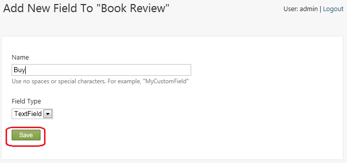
After you have added the fields, your custom type looks like the following illustration. Click Save to save the custom content type.
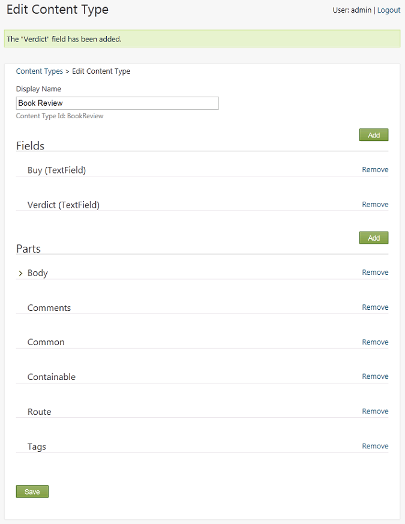
On the dashboard, expand the New menu. You see the Book Review content type. Don't click the new type on the dashboard yet. First you will create a book container to display book reviews in a list rather than as individual items.
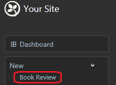
Creating a List of Books
To create the Book Review list, in the New menu of the dashboard, click List.
Note: The List module (that enables the New List link) may not be installed or active if you created your site using WebMatrix.
Name the new list "Book Reviews" and in the Contains field, select "Book Review" from the drop-down list. Select the Show on main menu option, and enter "Book Reviews" in the Menu Text field. When you're finished, save the new list.

Creating Book Content Items
Now you can start creating book reviews.
In the dashboard, click the new Book Review menu item. Create a few book reviews to populate the list. For each review you create, add values to the following fields, and then click Publish Now.
- Add To. Select List: Book Reviews from the drop-down list, so that the review is added to this list.
- Title. Enter the book title. A URL is generated based on the title.
- Body. Enter review comments.
- Buy. Add a URL to a site where the book can be purchased.
- Verdict. Add a value indicating your recommendation (buy, read, skip).
- Tags. Optionally, enter tags so that the list of reviews can be filtered.
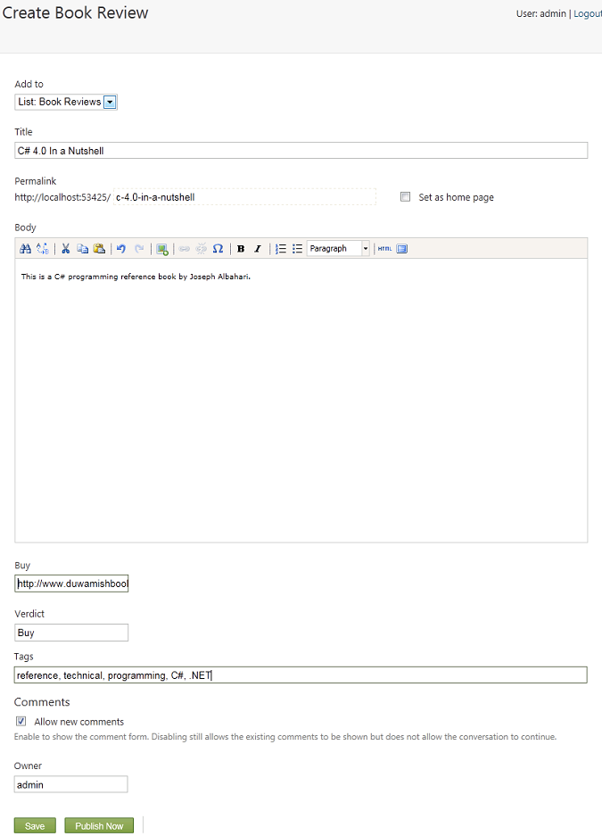
Displaying the List
To see the list of book reviews, return to the home page, and then click the new Book Reviews menu item.

Customizing How the List is Rendered
The Book Review content type uses a text field for the Buy field, because that's the default option in Orchard. However, because this field is intended to contain URLs, a URL field would work better. No specialized URL field available, but you can modify the rendering of the text field to make it better suited for URLs. Create the following new text file in your Orchard site:
~/Themes/Current theme for your site/Views/Fields/Common.Text.cshtml
Copy and paste the following code into the new file:
@using Orchard.Utility.Extensions;
@{
string name = Model.Name;
string value = Model.Value;
}
@if (HasText(name) && HasText(value)) {
<p class="text-field">
@if (name == "Buy") {
<a href="@value" class="value">Buy this book</a>
}
else {
<span class="name">@name.CamelFriendly():</span>
<span class="value">@value</span>
}
</p>
}
This template looks at the name of the field, and if the name is "Buy", the template changes the rendering to be a link to the value of the field.
In addition to customizing how fields render in a custom content type, you can change what's displayed and where it's displayed by using a placement.info file. If you already have a placement.info file at the root of your site's current theme folder, edit it and add the Match element shown in the following example before the </Placement> closing tag. If you don't already have a placement.info file, create a new file and add the following content:
<Placement>
<Match ContentType="BookReview">
<Match DisplayType="Detail">
<Place Parts_Common_Body="Content:before"
Parts_Tags_ShowTags="Content:after"
Parts_Comments="Footer"/>
</Match>
<Match DisplayType="Summary">
<Place Parts_Common_Body_Summary="Content"
Parts_Comments_Count="Nowhere"
Parts_Tags_ShowTags="Nowhere"
Parts_Common_Metadata_Summary="Nowhere"
Fields_Common_Text="Nowhere"/>
</Match>
</Match>
</Placement>
This placement file affects only the Book Review content type, as specified in the first Match element. Inside the first Match element there are two child Match elements that match the Detail and Summary display types. Those matches specify how book reviews are rendered in two cases: the details view and the list view.
When the details are displayed, the placement file specifies that the body of the review should appear at the beginning of the Content zone, the tags at the end of the same zone, and the comments in the Footer zone. If you are currently signed in as an admin user, temporarily sign out so that you can see the book reviews as a user would. Click one of the book reviews to see how the module that you added changes the rendering.
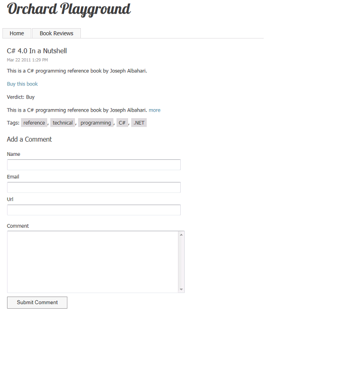
When the whole list of books is displayed, you want to display a more abbreviated view, such as the title and summary only for each book. To suppress the display of the comment count, the tags, the metadata and the fields, the placement.info file sends those shapes to the "Nowhere" zone. The "Nowhere" zone is not actually a defined Orchard zone, it is simply a standard way in .info files of suppressing elements you want to hide by sending them to an undefined zone. The summary is sent to the Content zone. Click the Book Reviews menu entry to view the updated rendering of your list of reviews.

Note The zones referred to in this section of the topic are not layout-level widget zones, but rather local zones. As an example of how these are defined, check out the /Core/Contents/Views/Items/Content.Summary.cshtml file.
Displaying Book Lists as Widgets
The next task is to display the latest book review in a right-hand sidebar on the home page of the site. You will use a container widget object to do that.
Sign back into your site, and on the dashboard click Widgets. On the Widgets screen, in the drop-down list under Current Layer, select the TheHomePage layer. In the list of zones, find the zone named Aside Second and click Add next to the zone. In the Choose a Widget screen, click Container Widget. The Add Widget screen is displayed.

In the Title field, enter "Latest Book Review". Under Show items from, make sure that List: Book Reviews is selected. Then save the widget.
Return to the home page, and notice that the latest reviews from your book reviews list are now displayed in the sidebar.
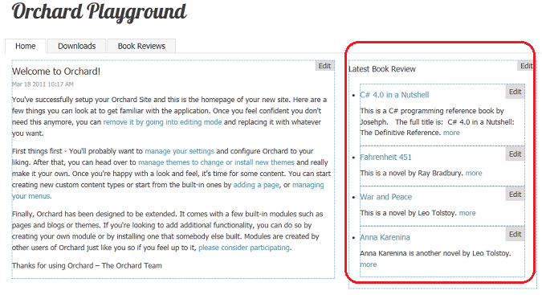
Creating a Custom List Widget
Using the filter feature, you can filter the values of custom properties named Custom1, Custom2, and Custom3. This in turn lets you filter what items from a list are displayed in a page. Now you will add some custom properties that will let you filter the display of your reviews.
In the dashboard, click Content, and then click the Content Types tab. Click Edit next to Book Review. On the Edit Content Type screen, click Add Parts.

Select the Custom Properties part, and click Save.
Now return to the Book Reviews page in your site and edit one of your book reviews. You will see text fields for the three new properties. Enter "Featured" into Custom One, and then save the updated review.

You can repeat the last step for any other reviews you'd like to feature on the home page.
To filter the reviews so that only featured reviews are displayed on the home page, click Widgets on the dashboard, and in the Widgets screen, select the TheHomePage layer from the Current Layer drop-down list. Then click the Latest Book Review widget that you created earlier.
In the Edit Widget screen, select the Filter items option, select the Custom 1 property from the first drop-down list, select is equal to from the second drop-down list, and enter "Featured" in the third drop-down list. This filters reviews so that only featured reviews are displayed on the home page. When you're finished, save the updated widget.
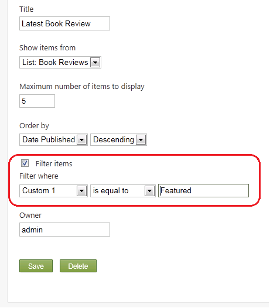
Browse to your home page. Notice that only the book reviews for which you entered "Featured" in the Custom 1 field are displayed.
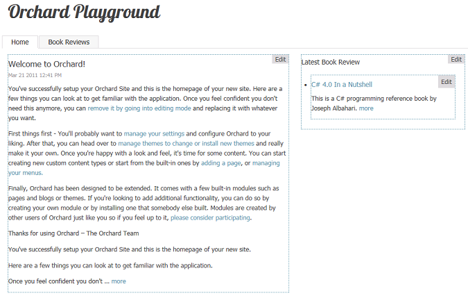
Now click Widgets on the dashboard, return to the Widgets screen, and again select the TheHomePage layer from the Current Layer drop-down list. Add another widget to the TheHomePage layer as you did previously by clicking Add next to the AsideSecond zone, and then click Container Widget to add it. This time in the Add Widget screen, set the Position value to 6 so that the new list appears below the first one. Set the Title property to "Featured Reviews", set the Maximum number of items to display value to 2, and select the Filter items option. Set the filter criterion to "Custom 1 is equal to Featured". Save your changes.
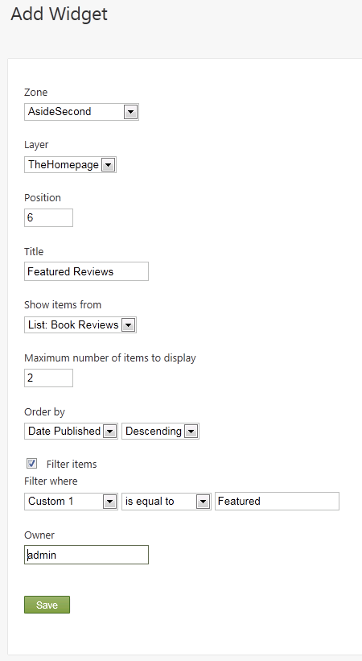
On the Widgets screen, click the Latest Book Review widget to edit it. Clear the Filter items check box, which means that it no longer filters reviews. Save the widget.
The following illustration shows what the home page looks like with the two widgets that you configured. It displays both the latest reviews ordered by date, and the featured review in which you added the value "Featured" to the Custom 1 property field for a specific book, and filtered for that property.
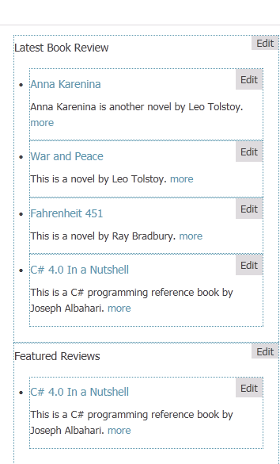
Pagination
The list feature has built-in support for pagination on list pages.
On the dashboard, click Content, and then click Edit next to Book Reviews. In the Edit list screen, change the page size to a number that is smaller than the number of reviews you've added to the system. Leave Show paging controls selected. Save the changes.
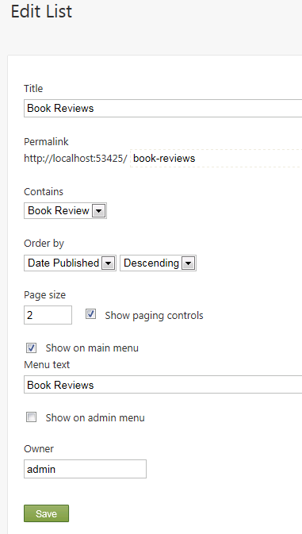
Go back to the Book Reviews page. Notice that there is an Older button that you can click to see older book reviews.
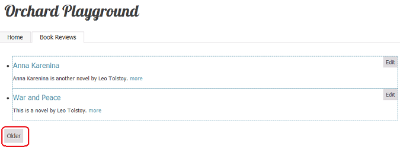
Note Pagination is available only on list pages and not on list widgets. This is by design, because pagination within a widget would allow multiple pagers on the same page, which could be confusing.
Change History
- Updated for Orchard 1.1
- 3-18-11: Updated all screens, menu options, and procedures for working with lists.